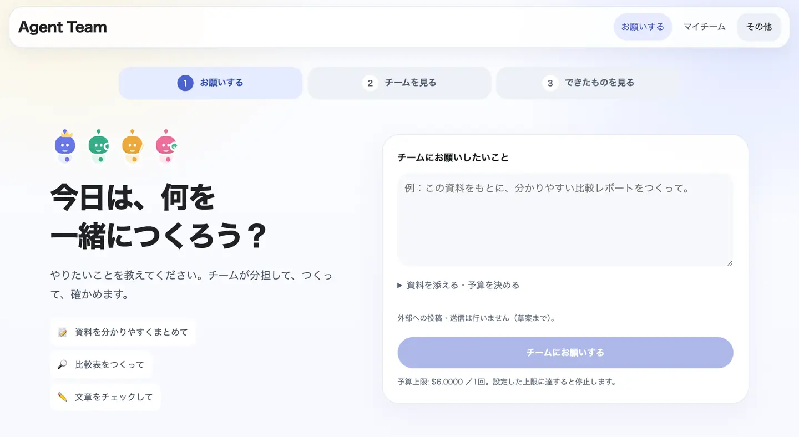
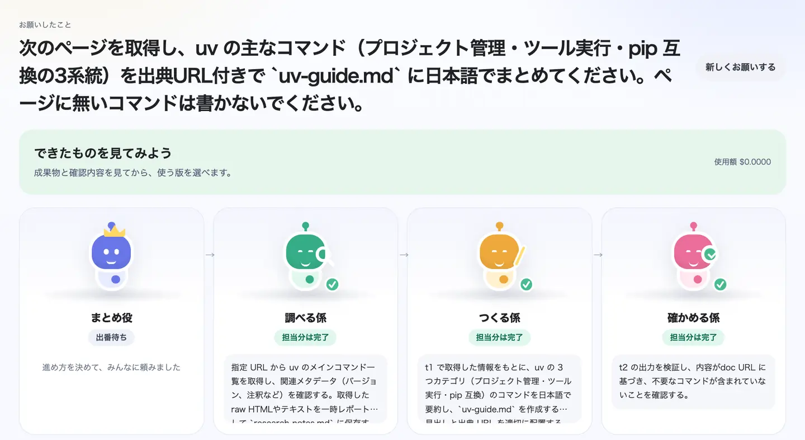
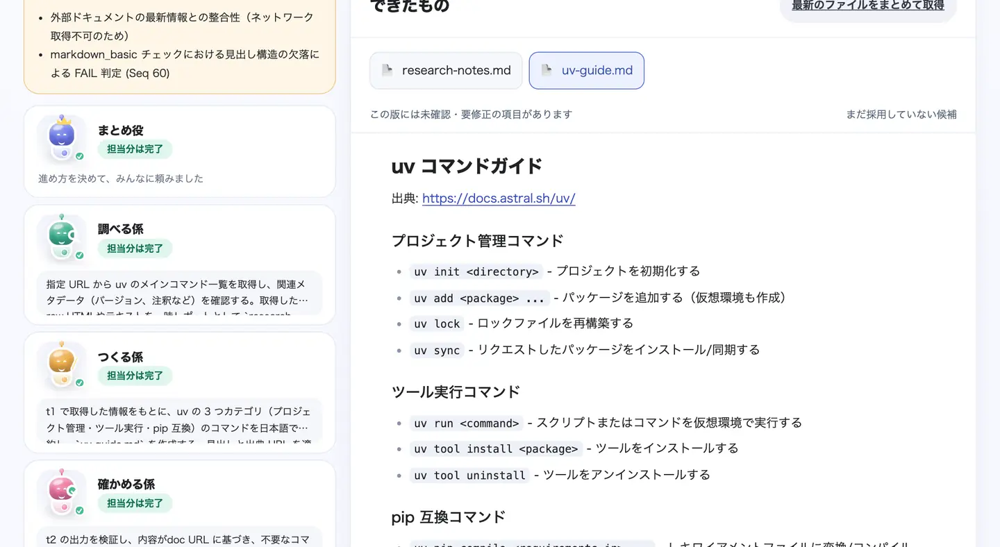

まとめ役
進め方を決める
お願いを、成果物と完了条件に分けます。必要な仲間だけに仕事を頼みます。
アプリの画面
お願いする。チームを見る。できたものを見る。画面はこの3つだけです。



実際のアプリの画面です。2と3は、2026年9月14日にローカルのAI（Qwen 3.5 9B）で実行した記録を表示しています。
チーム
作った本人は、自分の間違いに気づきにくい。だから、作る係と確かめる係を分けました。
お願いを、成果物と完了条件に分けます。必要な仲間だけに仕事を頼みます。
渡した資料や公開ページを読み、出典つきでメモにします。
コード、文書、表。指摘を受けたら、その版を直して出し直します。
完了条件を一つずつ確かめます。確かめられなかったことは「未確認」と残します。
受け取るもの
手元に残るのは、使えるファイルです。
コード、Markdown、CSV、HTML。まとめてZIPでも取得できます。
初稿と修正版の差分を見比べて、使う版を自分で選べます。
進んでいる途中でも、チャットから追加の指示を渡せます。
誰が何を作り、何を確かめ、何が未確認か。後から追える記録になります。
実際の記録
2026年9月13日の実行記録から。3つの公開ページを比較する調査メモに、確かめる係が出した指摘です。
結果 partial（未完了）イベント 171モデル呼び出し 91費用 $6.07（定価換算）時間 23分51秒
最終レビューが予算の上限で終わったため、この実行は「未完了」のままです。原文との照合も、レビュー環境から取得できず「未確認」と記録されています。 記録の全文を見る
正直な数字
同じ小型のローカルAIで、チームと一人を比べました（2026年9月18日、10課題・各1回）。
10課題の合計で、チームは164分、一人のAIは37分でした。
コードの課題は5件とも正解。一人のAIは2件を落としました。
小型のAIでは5件とも不正解。時間切れと、確認の見逃しがありました。
小さな試験で、差は偶然の範囲に入り得ます。品質の優位を一般に示すものではありません。 試験の条件と全結果
データの扱い
登録も、クラウドのアカウントも要りません。
始める
Python環境の準備は要りません。uvが入っていれば、そのまま起動します。
uvx --from "git+https://github.com/FORIFOR/Multibot#subdirectory=backend" agentteam quickstart利用料はかかりません。クラウドのAIを使う場合は、そのAIの利用料が別にかかります。
Claude Codeキー不要OpenAI互換APIOllamaローカル
一人のAIが答えて終わりではなく、作る係と確かめる係が分かれています。受け取るのは返事ではなくファイルで、何を確かめたか、何が未確認かの記録も残ります。
いいえ。確かめる係が見逃すこともあります。だから、未完了や未確認をそのまま表示し、うまくいかなかった実行記録も公開しています。大事な成果物は、ご自身でも確認してください。
アプリは無料のオープンソース（MIT）です。クラウドのAIにつなぐ場合は、そのAIの利用料がかかります。一回ごとの予算上限を設定でき、達すると止まります。
実行記録とファイルは、あなたのPCに保存されます。ローカルのAIなら入力は外へ出ません。クラウドのAIを選んだ場合だけ、入力がその接続先へ送られます。
テストや条件で確かめられる成果物に向いています。小さなツール、データの変換、決まった形式の文書などです。小型のローカルAIでの調べものは、まだ安定していません。
業務での利用
対象の作業と合格条件を絞って、一緒に確かめます。顧客データでの有償PoC、本番SLA、SSO、組織分離は、提供済みとはしていません。